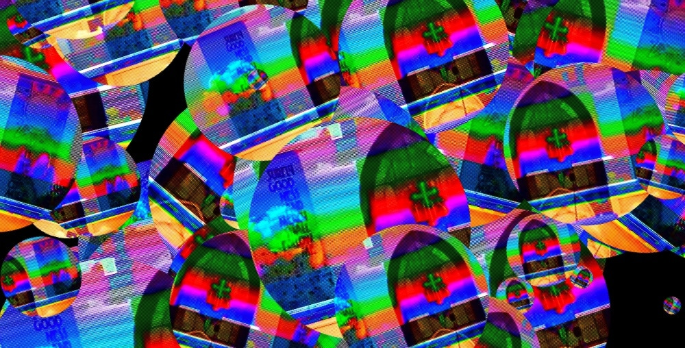
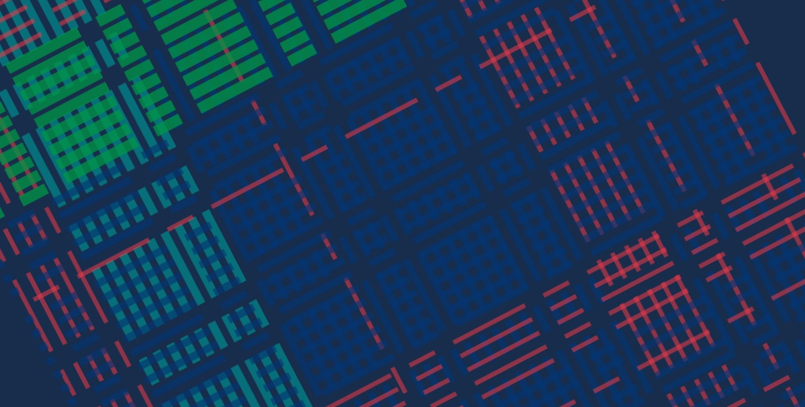
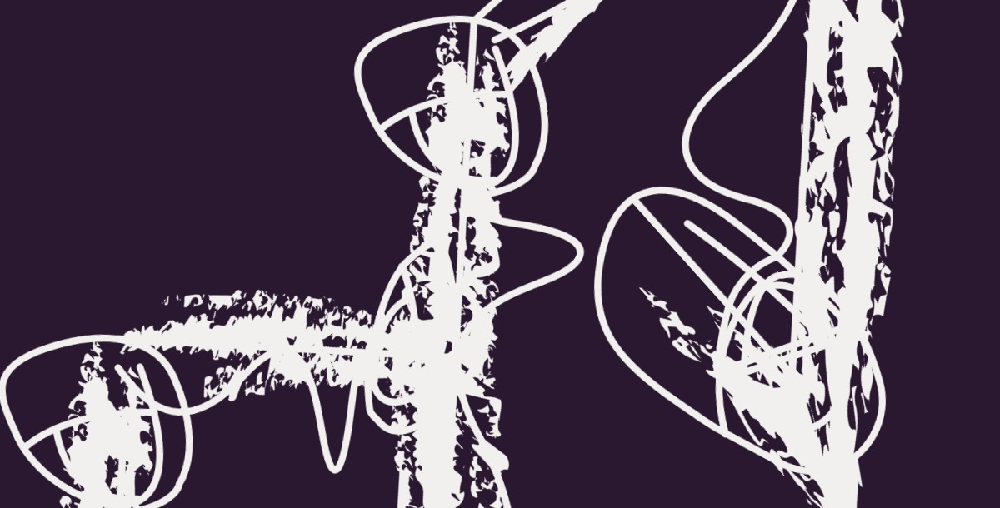
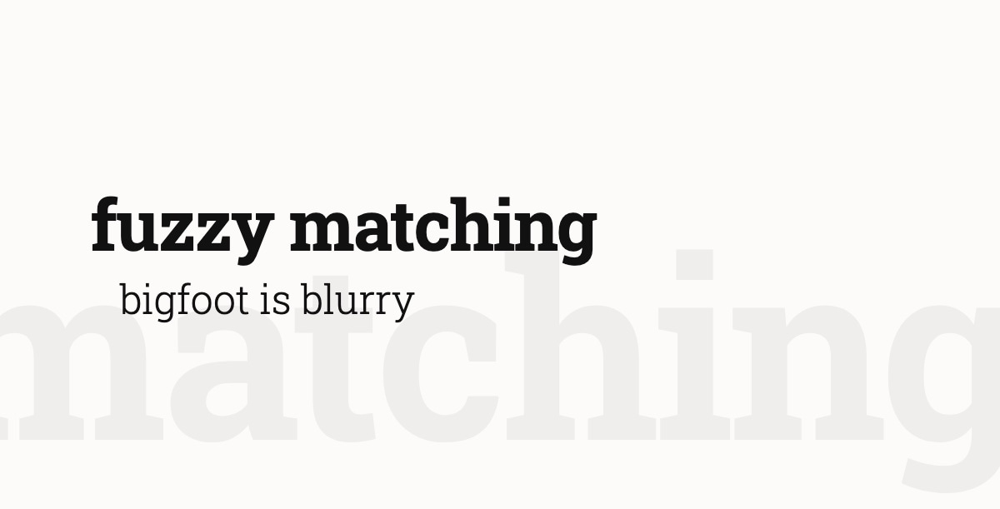
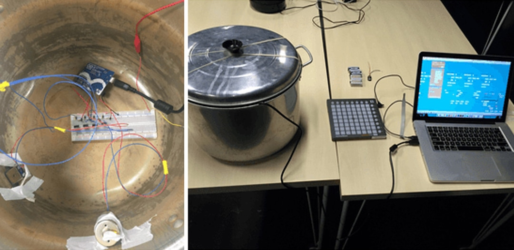
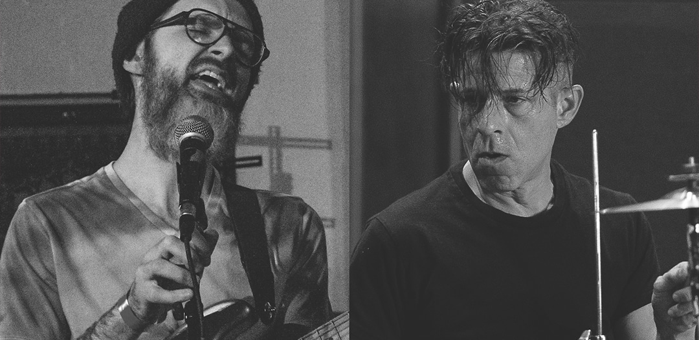
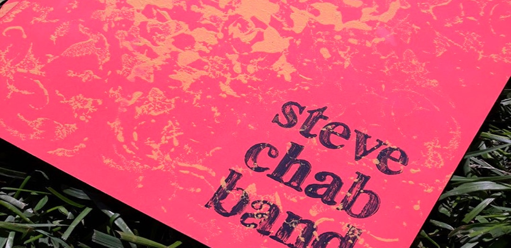

Weird, pretty things.
Artsy stuff here. Some blink and spin. Some make sounds.
-

CSS and JavaScript, no libraries
Larvascript
My art spins, blinks, zooms, and eats itself in raw CSS and JavaScript. No libraries, just nauseating visuals.
-

SVG line art, a tartan haze
Plaid to the Bone
Carnegie Mellon's intricate tartan, redrawn with simple, animated lines. Threads run like water. Weave swells in waves.
-

SVG, animated in JavaScript
Make the Logo Bigger
My hand-drawn wordmark, animated in three layers and synced to my boom bap beats. Zoom way in and nod your head.
-

A dictionary that keeps growing
Atextual
A dictionary of fake band names and song titles, hundreds of entries deep. Styled after the screensaver that teaches you words while you wait.
-

Motors, solenoids, and an Arduino
The Robotic Cooking Pot
For a sound design course at CMU, my team wired motors and solenoids inside a cooking pot and let an Arduino trigger them as percussion. It sat alone onstage and performed rhythms I composed. Hear the live pot performance on SoundCloud.
-

A band, on record and onstage
The Music
I front Steve Chab Band. Weird, pretty music. Unusual riffs and rhythms. Poetic lyrics. Visit stevechab.band for shows and words, or hear the music on Bandcamp.
-

Songs bound as an oversized book
The Chapbook
The songs began as poems, so I bound them in an oversized lyric book. Paint stamped by hand on salmon covers. No two alike. Read the chapbook online or order a hand-painted copy on Bandcamp.